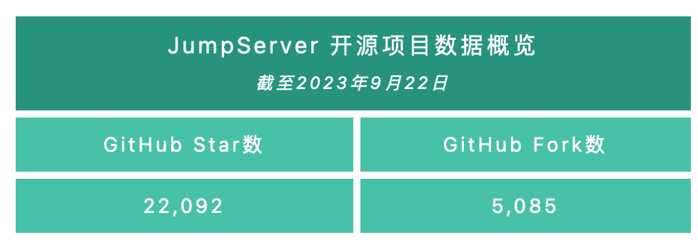
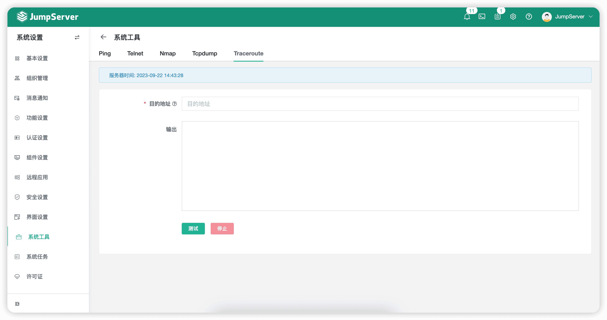
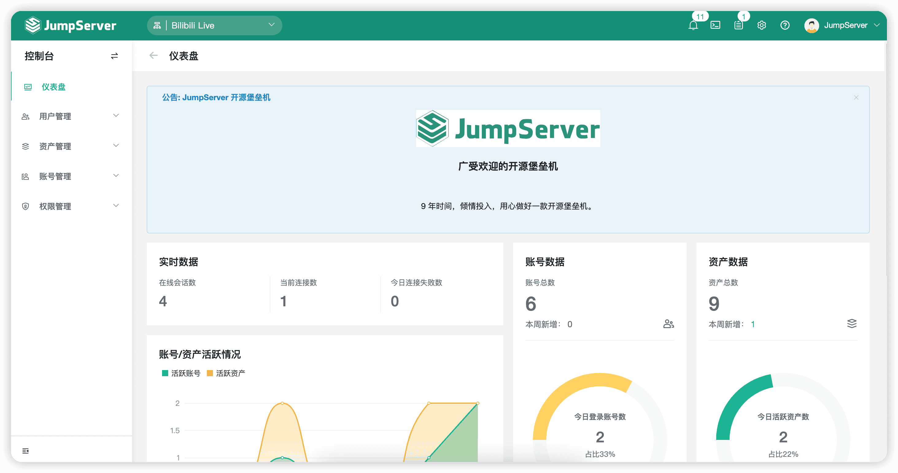
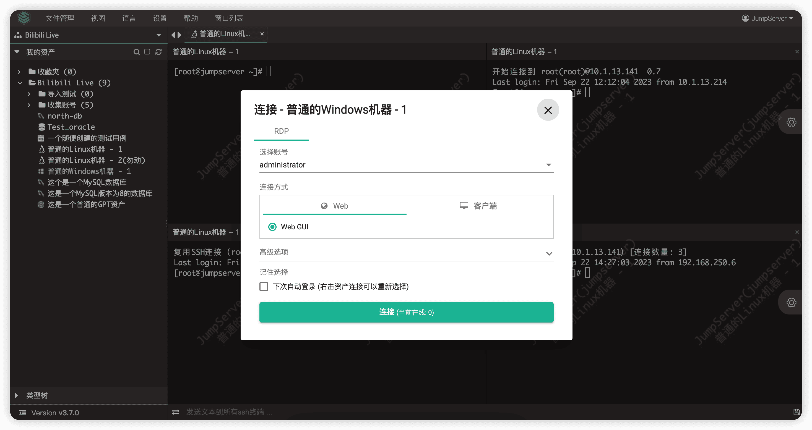
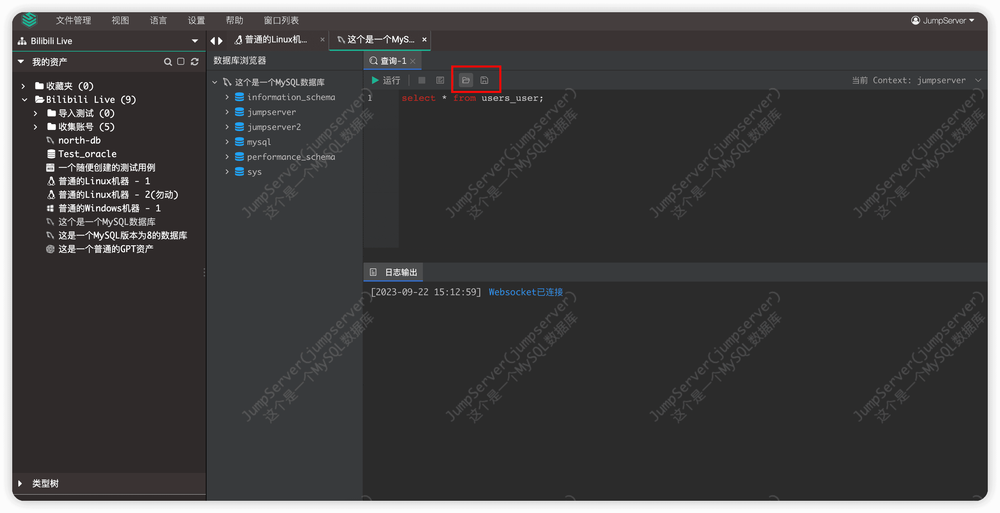
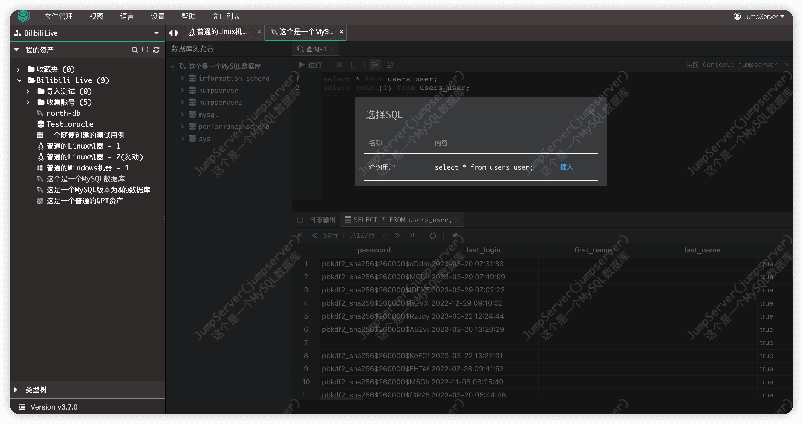

2023年9月25日，JumpServer开源堡垒机正式发布v3.7.0版本。在这一版本中，在用户管理层面，为了提高使用JumpServer操作资产的效率，JumpServer支持对会话进行分屏操作，用户可以在一个浏览器页面打开多个会话，方便用户进行对比操作，并对批量命令的执行结果进行实时查看。新增“个人设置”功能，支持对Luna、KoKo组件服务功能进行个性化配置。同时，新增支持Passkey用户认证方式，让用户可以更安全、更便捷地登录JumpServer。另外，“作业中心”功能支持对网络设备进行批量命令操作，用户可以在Web终端页面查看RDP协议账号的已连接数量，Web终端页面新增命令的选择、执行和保存功能。
在管理员层面，支持审计员查看在线用户信息，管理员可在“系统设置”页面中查看到当前全局锁定的IP，可以对其进行解锁操作。“系统工具”页面新增Traceroute工具，并优化了Telnet、Ping工具支持对多个IP进行检测，能够更加方便、快速地得到检测结果。
新增功能
1. 资产连接支持会话分屏显示
在JumpServer v3.7.0版本中，资产连接支持会话分屏显示。用户可以在一个浏览器界面打开多个会话，并对批量命令的执行结果进行实时查看，方便用户对会话中的内容进行对比操作，进一步提高了操作效率（目前单个会话最多支持4个分屏）。

▲ 图1 资产连接支持分屏显示2. 新增“个人设置”功能
在JumpServer v3.7.0版本中，JumpServer支持用户在“个人信息”页面对Luna、KoKo组件服务功能进行个性化配置。
▲ 图2 新增“个人设置”功能
3. 新增Passkey用户认证方式
在JumpServer v3.7.0版本中，JumpServer支持用户使用Passkey方式登录到堡垒机。根据当前设备的硬件配置，用户可以通过多种方式进行登录认证（例如PIN、指纹、人脸识别等）。这样一来，用户就可以以更安全、更便捷的方式登录JumpServer堡垒机。
▲ 图3 新增Passkey用户认证方式（系统设置开启页面）
▲ 图4 新增Passkey用户认证方式（个人配置页面）
4. 网络设备支持批量命令执行
在JumpServer v3.7.0版本中，“作业中心”功能支持对网络设备进行批量命令操作，提高了用户对相同命令的操作效率。
5. 支持查看在线用户信息
在JumpServer v3.7.0版本中，审计员可以在“审计台”→“在线用户”页面查看当前登录的用户信息，并且可以控制用户“下线”。
▲ 图5 支持查看在线用户信息
6. MySQL数据库支持SSL连接（Web GUI连接方式，Chen组件）
在JumpServer v3.7.0版本中，JumpServer支持对开启了SSL认证的MySQL数据库进行连接，目前只支持通过Web GUI的连接方式。
▲ 图6 MySQL数据库支持SSL连接（Web GUI连接方式，Chen组件）
7. 管理员可查看并解锁全局被限制登录的IP
在JumpServer v3.7.0版本中，管理员通过选择“系统设置”→ “安全设置”，在子菜单选择“登录限制”选项，即可查看被全局限制登录的IP，并对其进行解锁操作。
▲ 图7 管理员可查看并解锁全局被限制登录的IP
8. 系统工具Telnet、Ping支持批量测试，新增Traceroute工具
在JumpServer v3.7.0版本中，选择“系统设置”→“系统工具”，可以看到系统新增了Traceroute（即路由分析）工具，并且支持使用Telnet、Ping工具进行批量测试。管理员可以在Web页面上进行简单的工具操作，便于排查堡垒机的相关问题。
▲ 图8 系统工具Telnet、Ping支持批量测试，新增Traceroute工具
9. 公告内容支持Markdown语法
在JumpServer v3.7.0版本中，JumpServer对公告的内容格式进行了优化，支持Markdown语法，使用Markdown语法发布的公告可以更好地显示公告内容。

▲ 图9 公告内容支持Markdown语法10. Web终端页面支持查看RDP协议账号的已连接数量
在JumpServer v3.7.0版本中，针对RDP协议的资产，在“连接”按钮上会显示该资产当前已连接的用户数量，方便用户掌握该资产的使用情况。

▲ 图10 Web终端页面支持查看RDP协议账号的已连接数量11. Web终端页面新增命令的选择、执行和保存功能
在JumpServer v3.7.0版本中，当用户使用Web GUI方式连接数据库时，可以选中执行部分SQL命令，将查询面板中的SQL命令进行保存，方便下次继续执行。

▲ 图11 Web终端页面新增命令的选择、执行和保存功能（客户端登录操作界面）
▲ 图12 Web终端页面新增命令的选择、执行和保存功能（运行保存的SQL命令）功能优化
■ 优化Elasticsearch操作，支持写入数据流（KoKo组件），感谢@BoringCat（https://github.com/BoringCat）的贡献；
■ 数据库Web CLI/CLI连接方式回归；
■ 通过SSH命令行的方式连接JumpServer时，账号列表使用用户名进行排序；
■ 优化文件上传重命名的问题，支持在“个人设置”页面中配置策略；
■Redis-CLI命令连接支持中文显示；
■ “账号模版”页面中密文类型为密码和SSH密钥时，可设置“密文策略”；
■ 创建资产时，支持自动设置指定节点；
■ 优化创建用户时的默认角色设置；
■ 优化Windows资产账号密钥类型为SSH-Key时，隐藏“自动推送”选项；
■ 优化会话列表用户和资产字段，支持点击跳转；
■ 优化“资产授权”页面中用户和资产被选择之后，下拉菜单选项中还能重复选择的问题；
■ 优化登录页面移动端的布局；
■ Elasticsearch字段“主机”中不允许包含“#”字符；
■ 在堡垒机删除用户后，发布机会定时同步删除机器中对应的账号信息；
■ 优化发布机调度策略，避免多次调度到同一台发布机；
■ 优化平台ID字段权限为“可读写”，解决平台无法批量导入更新的问题；
■ 优化平台支持通过类别、类型进行搜索过滤；
■ 优化网络设备默认启用自动化功能；
■ 日志相关表结构添加一些字段索引，提高查询速度；
■ 查看、下载录像行为记录到操作日志中；
■ “账号模版”模块支持设置自动推送功能；
■ 优化不允许管理员修改自己的角色的问题；
■ 优化连接PostgreSQL数据库时，Chen组件将自动动态地加载相应驱动库；
■ 优化域账号登录的域字符标识支持格式（domain\username、username@domain) （Lion组件）；
■ 数据库命令复核支持显示SQL的影响行数（Chen组件）（X-Pack增强包内）；
■ SQL Server数据库添加驱动标识，解决不同版本的数据库连接失败的问题（X-Pack增强包内）。
Bug修复
■ 修复通过网域连接Kubernetes时，支持默认端口443，感谢@hoilc（https://github.com/hoilc）的贡献；
■ 修复KoKo组件获取SFTP路径错误的问题，感谢@hoilc（https://github.com/hoilc）的贡献；
■ 修复文件访问权限的问题（漏洞编号为：CVE-2023-42442，漏洞详情：https://github.com/jumpserver/jumpserver/security/advisories/GHSA-633x-3f4f-v9rw）；
■ 修复通过Web GUI连接数据库时，日期格式显示及long类型精度丢失的问题（Chen组件）；
■ 修复用户SSH公钥认证的问题（KoKo组件）；
■ 修复思科交换机Telnet连接时，命令过滤拦截失败的问题（KoKo组件）；
■ 修复会话连接失败阻塞，导致会话无法结束的问题（KoKo组件）；
■ 修复Luna页面不记住密码导致无法登录的问题；
■ 修复登录资产控制会全局生效的问题；
■ 修复CAS用户登录失败的问题；
■ 修复用户绑定MFA OTP的二维码不显示的问题；
■ 修复升级依赖包SAML2无法获取证书时，认证用户无法登录的问题；
■ 修复创建会话分享不填写用户导致报错的问题；
■ 修复账号密钥校验不支持包含“{%”字符的问题；
■ 修复主机名中包含“[”字符导致Ansible任务执行错误的问题；
■ 修复工单审计员修改申请的资产后，原申请资产依然被授权的问题（X-Pack增强包内）；
■ 修复SQL Server数据库账号推送、改密失败的问题（X-Pack增强包内）；
■ 修复Azure云平台无法同步资产的问题（X-Pack增强包内）；
■ 修复云同步所有资源都不执行同步策略的问题（X-Pack增强包内）；
■ 修复开启“仅已存在用户”的登录设置后，企业微信扫描登录不存在的用户，但会登录成功的问题（X-Pack增强包内）；
■ 修复Luna页面在SYSTEM组织下，节点不能展开问题（X-Pack增强包内）。